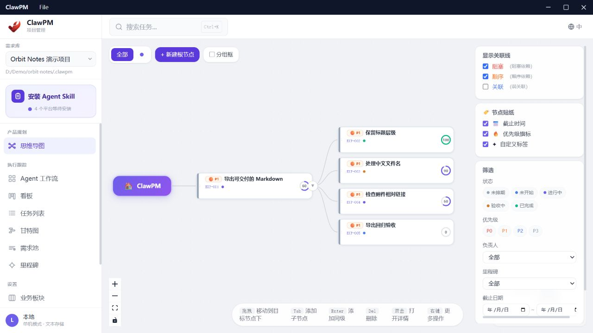
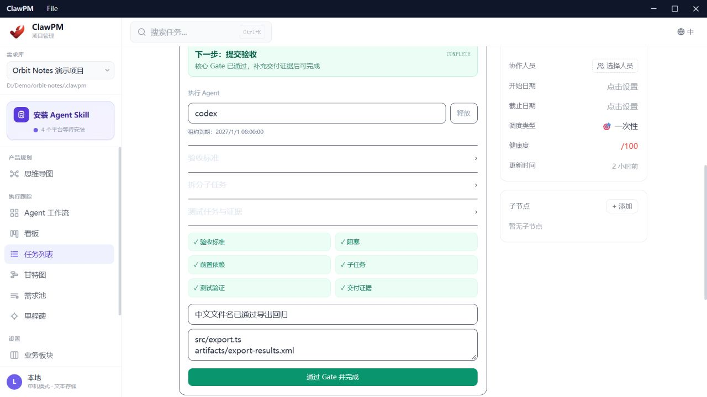

← 返回作品集本地桌面版 0.1.8 · 2026ClawPMClawPM 是一套给人和编程 Agent 共用的项目管理工具，将任务、验收条件和证据放进 Git 工程。换人或换 Agent 后，聊天上下文会丢，任务的依赖和验收依据仍应留在工程里。ClawPM 让桌面端与 Agent 共用一份随 Git 提交的任务库。Git 工程里的任务交接存储桌面端 / Agent编辑与回写项目任务库.clawpm 中的 JSONGit 提交任务与代码同版验收依赖与子任务限定可领取范围执行者租约记录责任与期限验收面板测试与交付证据放大查看 ↗桌面端 · Markdown 导出演示项目需求树、工作流和验收面板取自同一份 Markdown 导出演示工程，分别呈现依赖、执行状态与交付证据。本地任务库与两种写入端任务依赖、租约与验收本地任务库与两种写入端Electron 客户端负责编辑、浏览和校验，配套 Skill 让编程 Agent 直接维护当前 Git 工程的 .clawpm 目录。每项任务单独存为 JSON，代码和任务文件可以在同一次提交里追溯。放大查看 ↗桌面端与编程 Agent 通过本地任务文件交接。放大查看 ↗Skill 安装中心 · 支持 Claude Code、Cursor、Codex 和 CodeBuddy。任务依赖、租约与验收依赖树如何约束任务流转Markdown 导出演示将标题层级、中文文件名和附件链接分别建成子任务，整条回归依赖三项完成。思维导图和看板投影的是同一批任务；工作流依据依赖与状态区分阻塞、可领取和待测试。放大查看 ↗交付流程 · 先检查单项，再跑回归。放大查看 ↗Agent 工作流 · 可以看到每项任务接下来要做什么。领取与交付是两次不同的判定领取记录执行者和租约期限。提交验收时，桌面端再核对依赖、阻塞、子任务、通过条件、测试与交付证据。修改路径和回归结果与对应任务一起保留。放大查看 ↗任务验收面板 · 演示数据展示测试产物和交付路径。